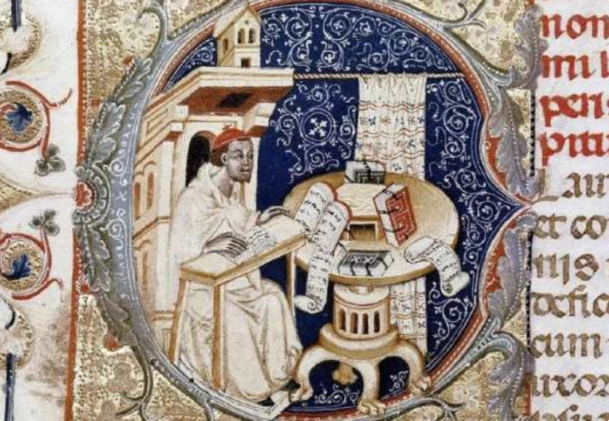

Histoire CM1 Moyen Âge Séance 8
Le rôle de l’Église
au Moyen Âge
Observe les enluminures et découvre comment l’Église intervient dans la vie des chrétiens.

Histoire CM1 Moyen Âge Séance 8
Observe les enluminures et découvre comment l’Église intervient dans la vie des chrétiens.
